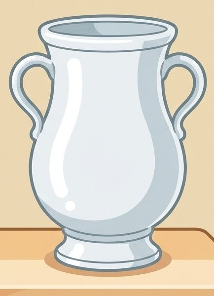
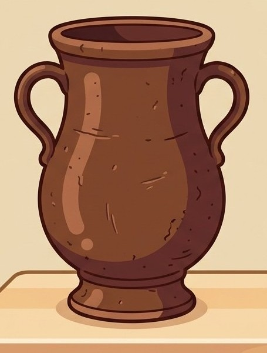
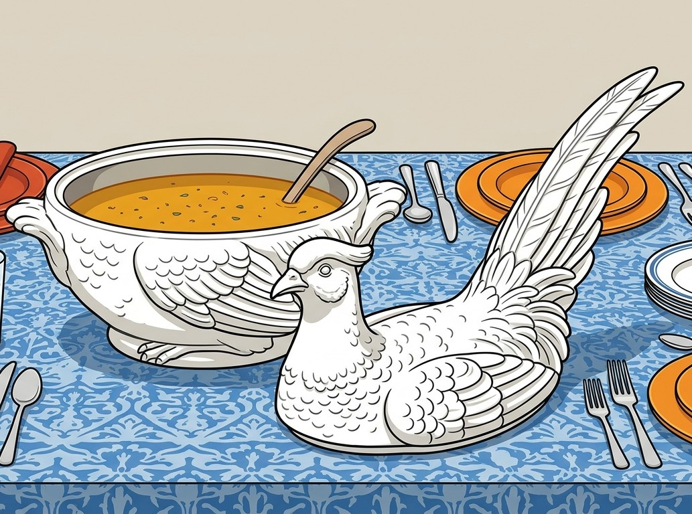

Hier kommen Sie zu dem Text von vorher.
Glossar
Hier sind schwierige Wörter erklärt.
Porzellan
Das ist ein feines und wertvolles Material.
Es ist meistens weiß und fest.
Aber es geht schnell kaputt.
Viele Gegenstände zum Essen und Trinken
sind aus Porzellan.
Zum Beispiel: Geschirr.

Manufaktur
Das ist eine besondere Werkstatt.
Dort machen Arbeiter die Dinge mit der Hand.
Sie benutzen fast keine Maschinen.
Böttger-Stein·zeug
Das ist ein sehr hartes Material aus Ton.
Es sieht ähnlich aus wie Porzellan.
Aber es ist braun oder grau.
Die Menschen haben es vor dem Porzellan benutzt.

Sake
Das ist ein Getränk mit Alkohol aus Japan.
Die Menschen machen Sake aus Reis.
Fasan-Terrine
Das ist eine Schüssel mit einem Deckel.
In der Schüssel stellt man warmes Essen
auf den Tisch.
Die Schüssel sieht aus wie ein Vogel.
Der Vogel heißt Fasan.

Bild·hauer
Das ist ein Künstler.
Er macht Figuren aus Stein, Holz oder Porzellan.
Hier kommen Sie zu dem Text von vorher.